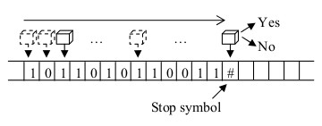
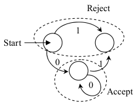
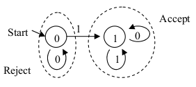
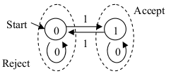
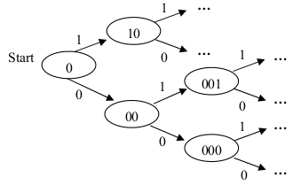

Pensar en una máquina de Turing simplificada que solo puede leer la cinta de input, y solo puede moverse hacia la derecha cada paso de su ejecución.
Nunca entra en un bucle infinito, siempre termina su ejecución contestando sí o no.
Este autómata tiene un estado interno, y según el símbolo que lee, puede cambiar de estado interno.
Tiene un estado inicial, con el cual empieza su ejecución, y según en qué estado está después de leer la palabra de entrada, acepta o rechaza dicha palabra.
La cantidad de estados es finita.
Un automata con 3 estados, sobre alfabeto 0,1. Según la palabra que recibe como input, su estado final será de aceptación o rechazo:

(No hace nada particular.)
Este autómata determina si existe algun 1 en la palabra de input:

Este autómata determina si hay una cantidad par o impar de 1s en la palabra de input:


Si sabemos que tenemos un input de tamaño N, podríamos definir un autómata de 2N estados que detecte las palabras capícuas.
¿Se puede para el caso general donde tenemos inputs de cualquier tamaño?
Un autómata finito determinista (AFD) tiene:
El lenguaje de un AFD A = (Q, Σ, δ, q0, F) es:
L(A) = {w ∣ δ(q0, w) ∈ F}
Decimos que L es un lenguaje regular si es el lenguaje de un AFD.
Describa los AFD que aceptan los siguientes lenguajes con el alfabeto {0, 1}:
Considere el AFD cuya tabla de transición es:
0 | 1
--------------
-> A | A | B
* B | B | A
--------------Describa informalmente el lenguaje de este AFD.
Misma pregunta para el AFD siguiente:
0 | 1
-----------------
-> * A | B | A
* B | C | A
C | C | C
-----------------¿Cómo demostrar que un lenguaje no es regular?
Para CAP (el lenguaje de las strings capicuas) podemos usar el principio del palomar (o del juego de las sillas) para mostrar que no es regular.
Mostremos que ningun AFD puede ser construido tal que pueda detectar si una string cualquiera es capicua. Para empezar, partimos una capicua al medio. Vamos a ignorar todo acerca del automata finito salvo su estado en el punto medio. Cualquier información que el automata va a llevar a la segunda mitad de la string debe estar codificada en ese estado.
Consideremos dos capicuas x ≠ y, |x| = |y| aceptados por el autómata. Entonces el autómata estará en el mismo estado cuando llegue a la mitad de x e y.
Armemos una string nueva z cruzando la primera mitad de x y la segunda mitad de y:
Entonces ningún automata finito puede reconocer todas las capicuas.